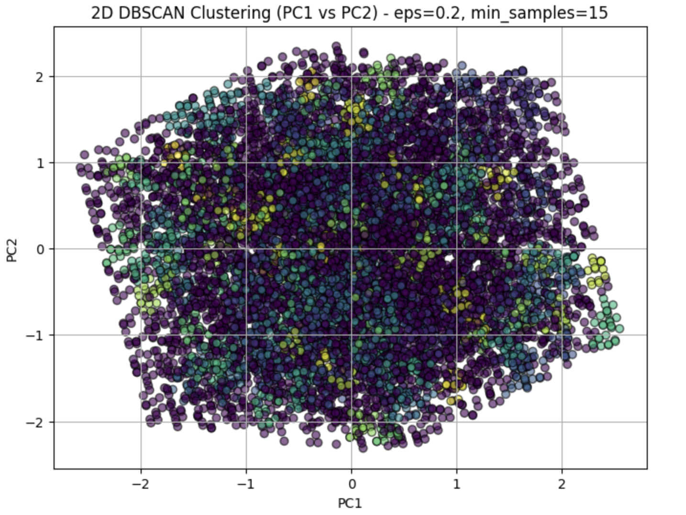

Key Messages & Final Thoughts
Polycystic Ovary Syndrome (PCOS) is not just a health condition it’s a personal and emotional journey that many women face every day. Through this project, I aimed to explore data in a way that could bring more awareness and clarity to this commonly misunderstood condition. By understanding the patterns and symptoms, I hope this work can serve as a small step toward better support and earlier diagnosis.
Every individual’s experience with PCOS is unique. Some may experience visible symptoms like skin issues or weight changes, while others may not notice anything until they face challenges with fertility or mental health. This wide range of experiences often leads to delayed diagnosis and frustration. My work emphasizes the importance of looking at PCOS from multiple perspectives — physical, emotional, and lifestyle.
One important lesson I learned is that no single symptom can confirm or rule out the presence of PCOS. Instead, it’s the combination of many subtle signs that tells a fuller story. By analyzing data from real individuals, I was able to identify patterns that are often missed in routine medical checks. These insights can help people ask the right questions and seek support sooner.
Another key takeaway is the importance of early awareness. When symptoms are recognized and monitored early, it becomes much easier to manage the condition with lifestyle changes, support, and medical guidance. It’s not about labeling someone — it’s about empowering them with knowledge. With better access to education and tools, more women can understand their own health and take action earlier.
In the end, this project reminded me that behind every data point is a real person. My goal wasn't just to analyze numbers, but to help bring compassion and clarity to a condition that deserves more attention. I hope this journey encourages more conversation, awareness, and care around PCOS — not just in clinics, but in everyday life.
This project set out to explore how machine learning techniques could assist in the early identification and understanding of Polycystic Ovary Syndrome (PCOS). Starting with real clinical datasets, we cleaned, prepared, and analyzed information such as Age, BMI, hair growth, and other clinical symptoms. Both supervised and unsupervised models were tested, helping us uncover hidden patterns and make accurate predictions that can ultimately benefit healthcare professionals and patients.
Among all the supervised learning models we used, Logistic Regression proved to be the most effective. It achieved the highest prediction accuracy of 76%, outperforming Decision Trees, Support Vector Machines (SVMs), Naïve Bayes, and even Ensemble methods like Random Forest. Logistic Regression worked particularly well because it captured the relationship between features in a simple, interpretable, and reliable way making it ideal for sensitive healthcare applications where understanding model decisions is crucial.
On the unsupervised learning side, DBSCAN (Density-Based Spatial Clustering) stood out as the best approach. Unlike traditional clustering methods that assume all data fits neatly into groups, DBSCAN recognized the natural spread of the data, identified dense clusters, and effectively marked outliers an important advantage when dealing with real-world, messy medical data like PCOS cases.
While other models like Decision Trees, Random Forests, SVMs, KMeans Clustering, and Naïve Bayes performed reasonably well, they either required heavier tuning, assumed too much about the data, or introduced more complexity than needed. In contrast, Logistic Regression remained consistently strong for predictions, and DBSCAN revealed the natural structure of the data without any assumptions making both models the most reliable and insightful.
In conclusion, this project highlights how thoughtfully applied machine learning methods can make a real difference in understanding complex health conditions. By using simple yet powerful models like Logistic Regression and DBSCAN, we can uncover trends, predict risks, and support better healthcare decisions. These findings open the door to future research where machine learning could help diagnose PCOS earlier, with more personalized and precise treatments.

